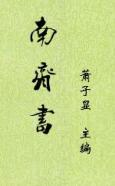

| 南齐书 |
| 作者：萧子显(主编) |
|
《南齐书》，60卷，今存59卷，包括本纪8、志11、列传40。南朝梁萧子显主编。记述南朝萧齐王朝自齐高帝建元元年（479年）至齐和帝中兴二年（502年），共二十三年史事，是现存关于南齐最早的纪传体断代史。 萧子显（489-537），字景阳，南梁兰陵（今江苏常州）人，齐高帝萧道成之孙，豫章文献王萧嶷第八子，南朝梁朝史学家，文学家。历任太子中舍人、国子祭酒、侍中、吏部尚书等职。后迁吴兴太守。博学能文，好饮酒、爱山水，不畏鬼神，持才傲物。见九流宾客，不与交言，只是举起手中扇子，一挥而已，谥曰“骄”。 [2018/11/23，重新整理] |
 |
| 原书目录 |
| 高帝萧道成本纪 (2) (3) (4) (5) (6) (7) |
| 武帝萧赜本纪 (2) (3) |
| 郁林王萧昭业本纪 |
| 海陵王萧昭文本纪 |
| 明帝萧鸾本纪 |
| 东昏侯萧宝卷本纪 (2) |
| 和帝萧宝融本纪 |
| 礼志 (2) (3) (4) (5) (6) (7) (8) |
| 乐志 (2) (3) (4) (5) (6) |
| 天文志 (2) (3) (4) (5) (6) (7) |
| 州郡志 (2) (3) (4) (5) (6) (7) (8) (9) (10) (11) (12) (13) (14) (15) (16) (17) (18) |
| 百官志 (2) (3) (4) (5) (6) |
| 舆服志 (2) (3) |
| 祥瑞志 (2) (3) (4) (5) |
| 五行志 (2) (3) (4) (5) |
| 皇后传 |
| 文惠太子传 |
| 豫章文献王传 (2) (3) |
| 褚渊、褚澄、徐嗣传 |
| 王俭传 |
| 柳世隆传 |
| 张瑰传 |
| 垣崇祖传 |
| 张敬儿传 |
| 王敬则传 |
| 陈显达传 |
| 刘怀珍传 |
| 李安民传 |
| 王玄载、王玄邈传 |
| 崔祖思传 |
| 刘善明传 |
| 苏侃传 |
| 吕安国、全景文传 |
| 周山图传 |
| 周盘龙传 |
| 王广之传 |
| 薛渊传 |
| 戴僧静传 |
| 桓康、尹略传 |
| 焦度传 |
| 曹虎传 |
| 江谧传 |
| 荀伯玉传 |
| 王琨传 |
| 张岱传 |
| 褚炫传 |
| 何戢传 |
| 王延之传 |
| 阮韬传 |
| 王僧虔传 |
| 张绪传 |
| 虞玩之传 |
| 刘休传 |
| 沈冲传 |
| 庾杲之传 |
| 王谌传 |
| 高帝十二王传 (2) |
| 谢超宗传 |
| 刘祥传 |
| 到捴传 |
| 刘悛传 |
| 虞悰传 |
| 胡谐之传 |
| 萧景先传 |
| 萧赤斧、萧颖胄传 (2) |
| 刘瓛、刘琎传 |
| 陆澄传 |
| 武十七王传 (2) (3) (4) |
| 张融传 |
| 周颙传 |
| 王晏传 |
| 萧谌传 |
| 萧坦之传 |
| 江祏传 |
| 江敩传 |
| 何昌宇传 (2) |
| 王思远传 |
| 徐孝嗣传 |
| 沈文季传 |
| 宗室传 (2) |
| 王秀之传 |
| 王慈传 |
| 蔡约传 |
| 陆慧晓、顾宪之传 |
| 萧惠基传 |
| 王融传 (2) |
| 谢朓传 |
| 袁彖传 |
| 孔稚珪传 |
| 刘绘传 |
| 王奂、王缋传 |
| 张冲传 |
| 文二王传 |
| 明七王传 |
| 裴叔业传 |
| 崔慧景传 |
| 张欣泰传 |
| 文学列传 (2) (3) (4) |
| 良政列传 (2) |
| 高逸列传 (2) (3) (4) |
| 孝义列传 (2) (3) |
| 幸臣列传 |
| 魏虏列传 (2) (3) (4) |
| 蛮列传 |
| 东南夷列传 (2) |
| 芮芮虏列传 |
| 河南列传 |
| 氐列传 |
| 羌列传 |
| 《南齐书》序 |